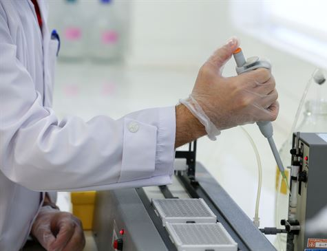

Veja as principais noticias
Itaú Unibanco confirma doação de R$ 1 bilhão para combate ao coronavírus
O Itaú Unibanco confirmou nesta segunda-feira que doará R$ 1 bilhão para combater o novo coronavírus e seus efeitos sobre a sociedade brasileira, com medidas que incluem ampliação da capacidade de hospitais e compra de insumos estratégicos, além de testagem populacional.
Chegam a São Paulo 574 mil testes de coronavírus
Uma carga com 574 mil testes de coronavírus, encomendada pelo Instituto Butantan, chegou na madrugada deste sábado (18) ao Aeroporto Internacional de Viracopos, em Campinas, interior do estado. Os testes serão utilizados pelo governo paulista no combate ao coronavírus.
Murilo Salviano conversa com a repórter Sônia Bridi e com a editora Nancy Dutra sobre o projeto da Organização Mundial da Saúde que reúne pesquisadores do mundo inteiro em busca da cura do coronavírus.
Marcia Woods, presidente do conselho da Associação Brasileira de Captadores de Recursos (ABCR), fala sobre as doações realizadas para fazer frente à pandemia.
Neste vídeo o biologo Atila mostra que a situação do Brasil pode ser melhor.Vamos torcer e fazer nossa parte.
Não é só de notícia ruim que o mundo vive: muitas coisas boas estão acontecendo nessa pandemia. A humanidade é resiliente e estamos juntos nessa. Acompanhe as notícias sobre como a curva de infectados está sendo achatada e como um bebê de 50 dias virou um símbolo de esperança na Itália.